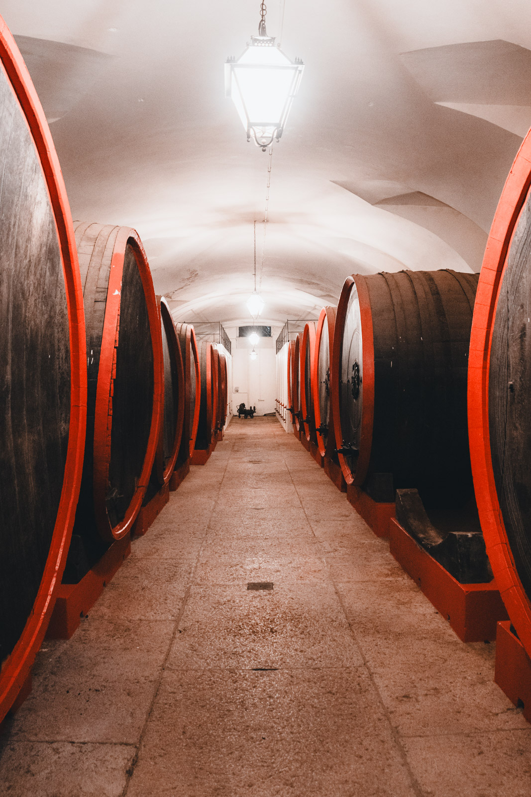
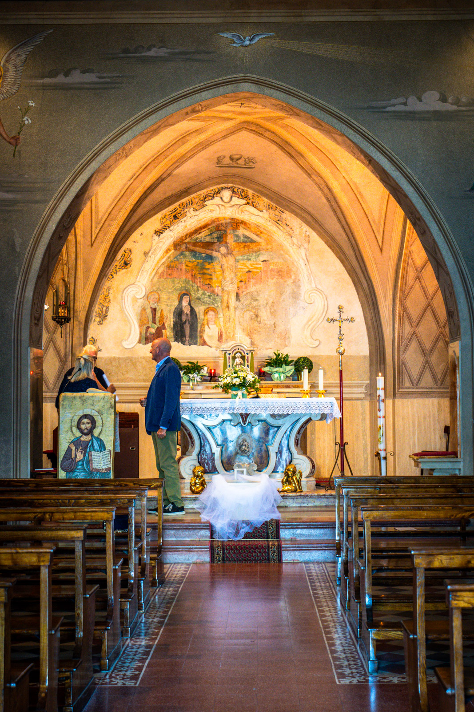
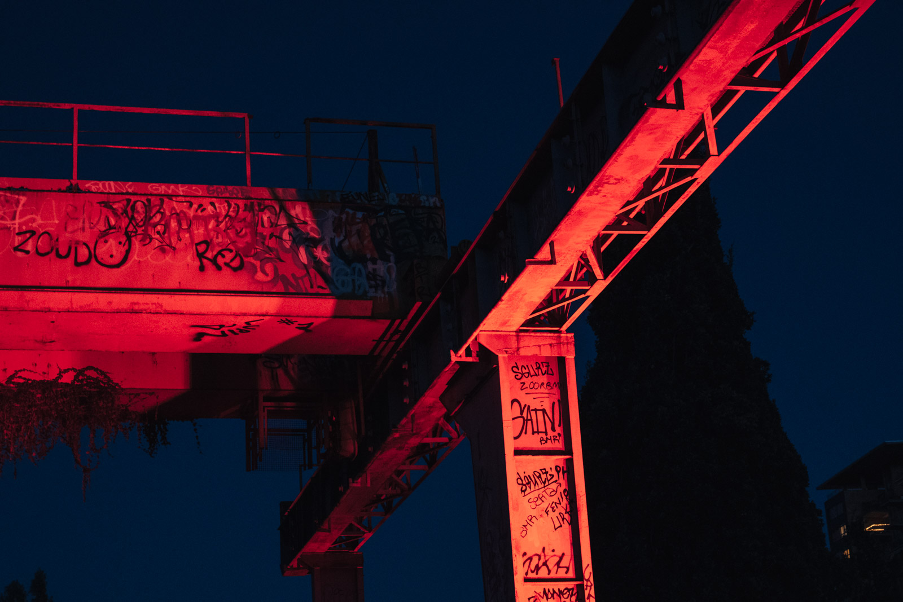
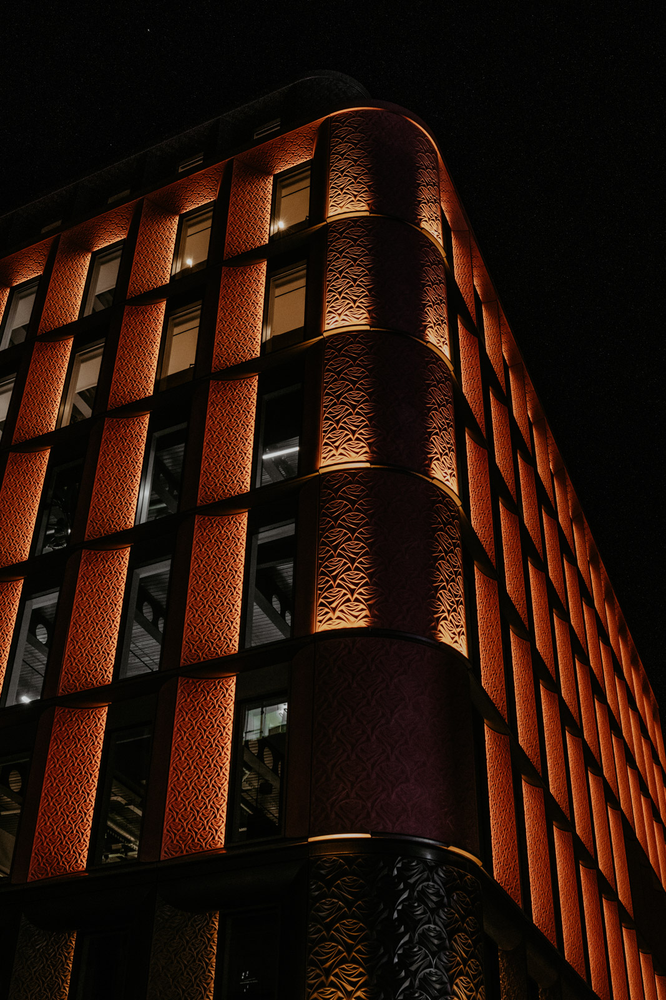

Quando la luce la porti tu
Fino a qui abbiamo usato la luce che c'era. Con la luce artificiale la scegli e la metti dove vuoi. È il passaggio dal trovare una foto al costruirla.
Le fonti sono due:
- Flash. Un lampo brevissimo e potente. Ferma il movimento e vince sul sole.
- Luce continua. Pannelli LED, lampade, anche una torcia. Vedi subito l'effetto, ma è molto meno potente del flash.
E poi c'è la luce artificiale che trovi: lampioni, insegne, vetrine, candele. Anche quella si sceglie, scegliendo dove metterti.


Il flash sulla fotocamera
Il flash montato sulla slitta, puntato dritto sul soggetto, dà la luce peggiore che esista: piatta, dura, con ombre nere dietro e occhi rossi. Ma basta poco per migliorarla.
- Rimbalzo. Gira la testa del flash verso il soffitto o una parete chiara. La sorgente diventa grande, la luce diventa morbida.
- Flash di schiarita. All'aperto, con il sole alle spalle del soggetto, un flash debole schiarisce il volto in ombra. Abbassa la potenza di uno o due stop.
- Diffusore. Un piccolo diffusore sulla testa del flash aiuta, ma meno del rimbalzo.
Tempo di sincronizzazione
Con il flash, l'otturatore deve essere tutto aperto nel momento del lampo. C'è un tempo massimo oltre il quale non succede più: il tempo di sincro-flash, di solito tra 1/160 e 1/250.
- Sopra quel tempo compare una banda nera nella foto, a meno di usare la modalità HSS, alta velocità di sincronizzazione, che però riduce la potenza.
- Il tempo controlla la luce ambiente. Il diaframma e la potenza del flash controllano la luce del flash. Sono due esposizioni in una.
Con il flash ci sono due luci da esporre. Prima esponi per l'ambiente con il tempo, poi regola il soggetto con il flash.
Il flash fuori dalla fotocamera
Togliere il flash dalla fotocamera è il passo che cambia tutto. Con un trasmettitore radio sulla slitta e il flash su un cavalletto, puoi mettere la luce dove vuoi: di lato, in alto, dietro.
- Una luce a 45 gradi, in alto, è lo schema Rembrandt del modulo 13. Funziona quasi sempre.
- Più vicina è la luce, più è morbida e più cala in fretta verso lo sfondo.
- Più lontana, più è dura e più illumina in modo uniforme.
I modificatori
| Modificatore | Luce | Uso tipico |
|---|---|---|
| Ombrello | Morbida, ampia, poco controllabile | Ritratti di gruppo, primo flash |
| Softbox | Morbida e controllata | Ritratto, still life |
| Beauty dish | Morbida ma con contrasto | Ritratto di moda |
| Snoot e griglie | Dura e concentrata | Dettagli, luci di contorno |
| Gelatine colorate | Cambiano il colore | Atmosfera, sfondi |
Schemi a una e due luci
Una luce
Luce principale con una softbox a 45 gradi, in alto. Un pannello bianco dal lato opposto per schiarire le ombre. È lo schema che usano molti fotografi di ritratto per tutta la vita.
Due luci
- Principale e schiarita. La seconda luce, più debole di uno o due stop, sostituisce il pannello.
- Principale e controluce. La seconda luce dietro il soggetto disegna un bordo luminoso e lo stacca dallo sfondo.
- Principale e sfondo. La seconda luce illumina solo lo sfondo, per schiarirlo o colorarlo.
Le luci della città
Di notte la città è un set già illuminato. Insegne, vetrine e lampioni sono luci di colori diversi.


- Bilanciamento del bianco manuale o in RAW. L'automatico spesso rende tutto arancione o grigiastro.
- ISO alti senza paura, o il treppiede per le scene ferme.
- Ora blu per avere ancora colore nel cielo con le luci accese.
Esercizio
Una sera in casa
Una lampada, un soggetto
- Al buio, metti un oggetto o una persona su un tavolo.
- Usa una sola lampada, o il flash del telefono di un amico, come unica luce.
- Spostala davanti, a 45 gradi, di lato e dietro. Fai una foto per posizione.
- Aggiungi un foglio bianco come riflettore dal lato opposto.
- Se hai un flash, prova il rimbalzo sul soffitto e confronta con il flash diretto.